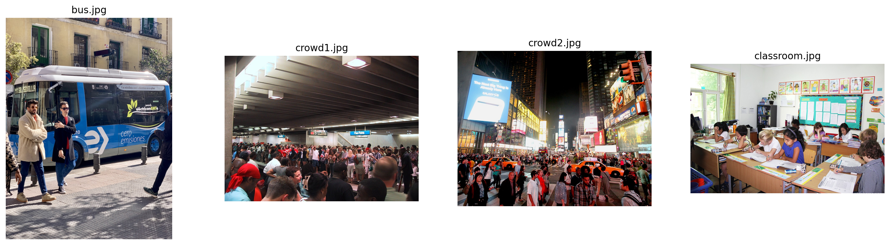
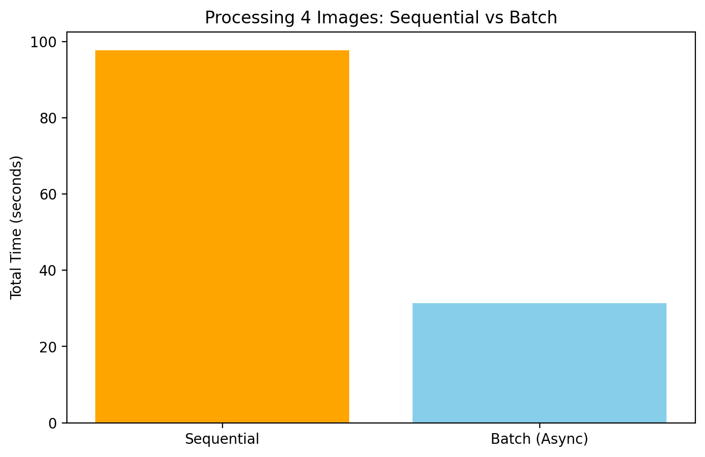

import os
import time
import asyncio
from google import genai
from PIL import Image
import io
import matplotlib.pyplot as plt
# Setup the client
# Ensure GEMINI_API_KEY is set in your environment
client = genai.Client(api_key=os.environ.get("GEMINI_API_KEY"))
MODEL_ID = "models/gemini-3-pro-preview" # Or gemini-1.5-flash
# retina backend
%config InlineBackend.figure_format = 'retina'Introduction
When processing large datasets of images with Multimodal LLMs, latency can become a bottleneck. In this post, we explore the performance difference between sequential processing (one image at a time) and concurrent/batch processing (multiple images in parallel) using the Gemini API.
We will use a realistic scenario: counting the number of people in 4 different images representing various crowd densities.
Load the Images
We will use 4 different images: 1. A bus scene (bus.jpg) 2. A dense crowd (crowd1.jpg) 3. Times Square (crowd2.jpg) 4. A classroom (classroom.jpg)
image_paths = ["bus.jpg", "crowd1.jpg", "crowd2.jpg", "classroom.jpg"]
images = [Image.open(p) for p in image_paths]
prompt = "Count the number of people in this image. Return just the integer number."
# Display images in a grid
fig, axes = plt.subplots(1, 4, figsize=(20, 5))
for ax, img, name in zip(axes, images, image_paths):
ax.imshow(img)
ax.set_title(name)
ax.axis('off')
plt.show()
print(f"Benchmarking with {len(images)} images.")
Benchmarking with 4 images.Sequential Processing
First, let’s process the images one by one in a simple loop.
def run_sequential(images, prompt):
results = []
start_time = time.time()
for i, img in enumerate(images):
print(f"Processing image {i+1}/{len(images)}...", end="\n")
response = client.models.generate_content(
model=MODEL_ID,
contents=[img, prompt]
)
results.append(response.text)
end_time = time.time()
return end_time - start_time, results
print("Starting sequential processing...")
seq_time, seq_results = run_sequential(images, prompt)
print(f"Sequential processing took: {seq_time:.2f} seconds")
print(f"Average time per image: {seq_time/len(images):.2f} seconds")
# Print results
for name, res in zip(image_paths, seq_results):
print(f"{name}: {res}")Starting sequential processing...
Processing image 1/4...
Processing image 2/4...
Processing image 3/4...
Processing image 4/4...
Sequential processing took: 97.71 seconds
Average time per image: 24.43 seconds
bus.jpg: 6
crowd1.jpg: 102
crowd2.jpg: 144
classroom.jpg: 11Batch (Concurrent) Processing
Now, let’s use Python’s asyncio to send multiple requests at the same time.
async def process_one_async(client, img, prompt):
response = await client.aio.models.generate_content(
model=MODEL_ID,
contents=[img, prompt]
)
return response.text
async def run_batch(images, prompt):
start_time = time.time()
# Create tasks for all images
tasks = [process_one_async(client, img, prompt) for img in images]
# Run them concurrently
results = await asyncio.gather(*tasks)
end_time = time.time()
return end_time - start_time, results
print("Starting batch processing...")
# In a Jupyter notebook, await works directly at the top level
batch_time, batch_results = await run_batch(images, prompt)
print(f"Batch processing took: {batch_time:.2f} seconds")
print(f"Average time per image: {batch_time/len(images):.2f} seconds")
# Print results
for name, res in zip(image_paths, batch_results):
print(f"{name}: {res}")Starting batch processing...
Batch processing took: 31.35 seconds
Average time per image: 7.84 seconds
bus.jpg: 5
crowd1.jpg: 98 people are visible in the image.
crowd2.jpg: 103
classroom.jpg: 10Comparison and Verification
Let’s compare the performance and verify that the results are consistent.
speedup = seq_time / batch_time
print(f"Speedup: {speedup:.2f}x")
# Visualization of speedup
plt.figure(figsize=(8, 5))
plt.bar(['Sequential', 'Batch (Async)'], [seq_time, batch_time], color=['orange', 'skyblue'])
plt.ylabel('Total Time (seconds)')
plt.title(f'Processing {len(images)} Images: Sequential vs Batch')
plt.show()Speedup: 3.12x
# Verify consistency
print("Verifying results consistency:")
consistent = True
for i, (s, b) in enumerate(zip(seq_results, batch_results)):
# Simple check if strings are identical or close (handling potential whitespace)
s_clean = s.strip()
b_clean = b.strip()
match = s_clean == b_clean
print(f"Image {i+1} ({image_paths[i]}): Sequential='{s_clean}', Batch='{b_clean}' -> Match: {match}")
if not match:
consistent = False
if consistent:
print("SUCCESS: All counts match between sequential and batch processing.")
else:
print("WARNING: Some counts differ. This might be due to LLM non-determinism.")Verifying results consistency:
Image 1 (bus.jpg): Sequential='6', Batch='5' -> Match: False
Image 2 (crowd1.jpg): Sequential='102', Batch='98 people are visible in the image.' -> Match: False
Image 3 (crowd2.jpg): Sequential='144', Batch='103' -> Match: False
Image 4 (classroom.jpg): Sequential='11', Batch='10' -> Match: False
WARNING: Some counts differ. This might be due to LLM non-determinism.